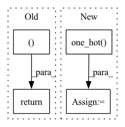

Pattern ID :11971

Before Change
encoding_indices = soft_one_hot.argmax(dim=1)
return z_q, loss, (None, None, encoding_indices)
After Change
loss = self.kl_weight * torch.sum(qy * torch.log(qy * self.num_tokens + 1e-10), dim=1).mean()
encoding_indices = soft_one_hot.argmax(dim=1)
encodings = F.one_hot(encoding_indices, self.num_tokens).type(z.dtype)
avg_probs = torch.mean(encodings, dim=0)
perplexity = torch.exp(-torch.sum(avg_probs * torch.log(avg_probs + 1e-10)))
return z_q, loss, (perplexity, encodings, encoding_indices)
In pattern: SUPERPATTERN
Frequency: 3
Non-data size: 4
Instances
Fragment ID: 40521163
Project Name: tgisaturday/dalle-lightning
Commit Name: 39e8b24fa405a4320d7c683e7054ae18ef4563f4
Time: 2021-07-28
Author: jamesk1228@gmail.com
File Name: pl_dalle/modules/vqvae/quantize.py
M Class Name: GumbelQuantizer
N Class Name: GumbelQuantizer
M Method Name: forward(2)
N Method Name: forward(2)
M Parent Class: nn.Module
N Parent Class: nn.Module
M File Name: pl_dalle/modules/vqvae/quantize.py
N File Name: pl_dalle/modules/vqvae/quantize.py
M Start Line: 127
M End Line: 135
N Start Line: 127
N End Line: 138
'>
Before Change
_, fake_images_eps = generator(zs_eps, fake_labels, eval=not is_train)
else:
fake_images_eps = None
return fake_images, fake_labels, fake_images_eps, trsp_cost, ws
def stylegan_generate_images(zs, fake_labels, num_classes, style_mixing_p, generator_mapping, generator_synthesis, truncation_psi, truncation_cutoff):
one_hot_fake_labels = F.one_hot(fake_labels, num_classes=num_classes)
if truncation_psi == -1:
After Change
info_discrete_c, info_conti_c = None, None
if MODEL.info_num_discrete_c != "N/A":
info_discrete_c = torch.randint(MODEL.info_dim_discrete_c,(batch_size, MODEL.info_num_discrete_c), device=device)
zs = torch.cat((zs, F.one_hot(info_discrete_c).view(batch_size, -1)), dim=1)
if MODEL.info_num_conti_c != "N/A":
info_conti_c = torch.rand(batch_size, MODEL.info_num_conti_c, device=device) * 2 - 1
zs = torch.cat((zs, info_conti_c), dim=1)
'>
Fragment ID: 40521177
Project Name: postech-cvlab/pytorch-studiogan
Commit Name: ab7ec013b79fd15c112d03558e534288ba0a1128
Time: 2022-01-18
Author: joonghyuk4727@gmail.com
File Name: src/utils/sample.py
M Class Name: AnonimousClass
N Class Name: AnonimousClass
M Method Name: generate_images(19)
N Method Name: generate_images(19)
M Parent Class:
N Parent Class:
M File Name: src/utils/sample.py
N File Name: src/utils/sample.py
M Start Line: 112
M End Line: 166
N Start Line: 112
N End Line: 174
'>
Before Change
codevectors = codevectors.reshape(batch_size, sequence_length, -1)
return codevectors, perplexity
After Change
hidden_states = hidden_states.view(batch_size * sequence_length * self.num_groups, -1)
codevector_idx = hidden_states.argmax(dim=-1)
hard_probs = torch.nn.functional.one_hot(codevector_idx.long(), num_classes=self.num_vars).view(
batch_size * sequence_length, self.num_groups, -1
)
code_perplexity = self._compute_perplexity(hard_probs.float(), mask_time_indices)
soft_probs = torch.softmax(
hidden_states.view(batch_size * sequence_length, self.num_groups, -1).float(),
dim=-1,
)
prob_perplexity = self._compute_perplexity(soft_probs, mask_time_indices)
if self.training:
// sample code vector probs via gumbel in differentiateable way
codevector_probs = _ipu_gumbel_softmax(hidden_states.float(), tau=gumbel_temperature, hard=True).type_as(
hidden_states
)
else:
codevector_probs = hard_probs.type_as(hidden_states)
codevector_probs = codevector_probs.view(batch_size * sequence_length, self.num_groups, -1)
codebook = self.codevectors[0, :, :]
'>
Fragment ID: 40521169
Project Name: huggingface/optimum-graphcore
Commit Name: 2ec4ed72ea362414d20c9b112072f3aa7b3d399a
Time: 2022-07-29
Author: 91201457+thorinf@users.noreply.github.com
File Name: optimum/graphcore/models/wav2vec2/ipu_gumbel_vector_quantizer.py
M Class Name: IPUWav2Vec2GumbelVectorQuantizer
N Class Name: IPUWav2Vec2GumbelVectorQuantizer
M Method Name: forward(4)
N Method Name: forward(4)
M Parent Class: Wav2Vec2GumbelVectorQuantizer
N Parent Class: Wav2Vec2GumbelVectorQuantizer
M File Name: optimum/graphcore/models/wav2vec2/ipu_gumbel_vector_quantizer.py
N File Name: optimum/graphcore/models/wav2vec2/ipu_gumbel_vector_quantizer.py
M Start Line: 68
M End Line: 102
N Start Line: 80
N End Line: 110